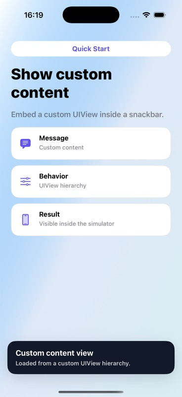

Quick Start
Show custom content
Embed a custom UIView when message text is not enough.
Code
let contentView = makeStatusView() let snackbar = TTGSnackbar( customContentView: contentView, duration: .forever ) snackbar.shouldActivateLeftAndRightMarginOnCustomContentView = true snackbar.show()
